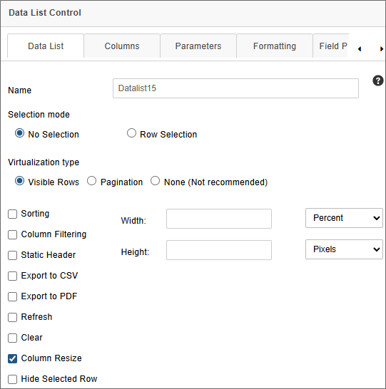
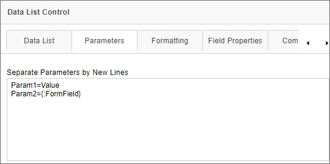
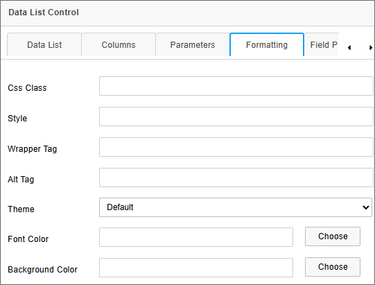
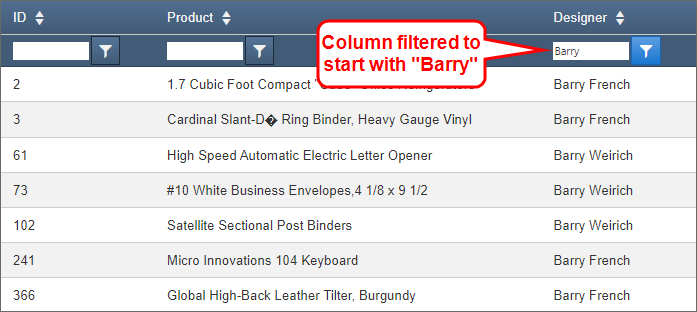
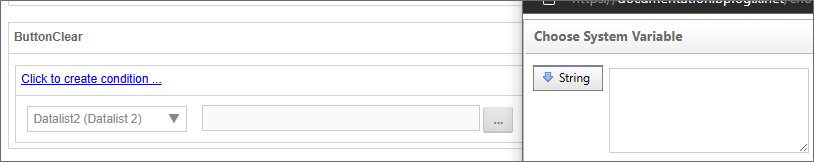

For Process Director v6.1.0 and higher, a new control dropdown menu, Data List, will appear. This menu will contain the selection for the Data List Form control, and its associated controls.
Unlike other types of Form field, the contents of the Data List control do not get saved with the Form instance as Form data. Instead, the Data List control is largely a display control that presents large datasets from external sources on the Form. The data displayed in the Data List can be selected and transferred to other Form fields for saving as Form data when desired.
 Data List
Data List

The Data List control enables the display of table data of nearly any size for display on a Process Director Form. Prior to Process Director v6.0.100, the only method of displaying tabular data was through the use of Array controls. Array controls, however, can only display relatively large sets of tabular data when the array controls are disabled and displayed only as text. Otherwise, the use of a large number of active controls in a Form array uses excessive system resources, and will make the form nonfunctional after a certain number of fields.
The Data List control, on the other hand, completely solves the issue of presenting and using large data sets on a Form. Data can be selected by cell or by row, and transferred from the Data List cell or row to a separate set of Form fields (either regular or Array fields). For example, in the screen shot below, the Data List is displaying a recordset containing 826 rows of data on a Form, with no perceptible loss of Form performance or resource usage.

The following fields are available to configure the Data List control.
Name: The Control's name.
Selection Mode: This property enables you to specify the method, if any, that will be used to select data in the control. There are three selection options:
Virtualization Type: In order for the Data List control to handle large numbers of records without affecting performance or using excessive memory, the Data List control provides two options for controlling when records are rendered visible on the page: Visible Rows and Pagination. A third option, None, will not invoke any virtualization for the data.
Width: Sets the display width of the control on the form, in either percent or pixels. In most cases, a setting of 100% is the appropriate value for this property.
Height: Sets the display width of the control on the form, in pixels.
Grouping: Enables the grouping feature. Users can select a specific column to group all records, in alphabetical order, by the value in the selected column.
Sorting: Enables the sorting feature, to allow users to sort the table data in ascending or descending order by clicking on the column header of the desired column they wish to sort.
Column Filtering: Enables users to filter the contents of the list, by adding a text box and filtering criteria to the header of each column.

Users can filter the data by one or more columns by adding the desired filter term in the text box, then selecting a filter type from the adjacent dropdown menu button. Filters are not case-sensitive. The following filter methods are available from the dropdown menu:
|

|
For Process Director v6.1.600 and higher, entering text and pressing the [ENTER] key will automatically filter the content of the Data List either by using the "Contains" filter as a default, if no filter type has been selected, or by the currently selected filter type. In prior versions, the filter operation will only occur after a filter type is selected.
Static Header: Fixes the position of the column headers, so that they don't scroll with the rest of the data when scrolling the list vertically.
Export to CSV: Displays an CSV export icon in the upper right corner of the control that, when clicked, will export the list data to a CSV file.
Export to PDF: Displays a PDF export icon in the upper right corner of the control that, when clicked, will export the list data to a PDF file.
Refresh: This property will display an icon in the upper right corner of the control that, when clicked, will refresh the list data.
Clear: This property will display an icon in the upper right corner of the control that, when clicked, will remove all filters and data selections from the list.
Column Resize: This property will enable end users to resize the column widths for any column by dragging and dropping a column's borders. This property is enabled by default.
Hide Selected Row: This property will hide rows in the Data List that have been selected at run time. When this option is selected, rows will be hidden after adding them to a linked Array control. The rows will be visible again if removed from the Array.
The Field Properties for the data list control are accessible from the Form Controls tab of the Form definition and, for appropriately licensed installations, from the Design Console of the Online Form Designer. One of the Data List control's Field Properties, the Default Value property, must be set to an appropriate Content List item, usually a Business Value.

In this example, the Default Value is provided via a Business Value named Airports. When the Form first opens, Airports will be called, and the Data List will be automatically populated with the data returned by this Business Value. The data will be cached in memory until the Form is closed. Only clicking the Refresh icon, if it's displayed, or closing and re-opening the form, will refresh the data displayed in the Data List control.
The Columns tab of the control properties enables you to specify the columns you which to display in the Data List control.

This tab enables you to select only the columns you wish to display by checking the Visible property for the desired field names. At run-time, only the Visible-selected columns will be displayed in the Data List control.
For Process Director v6.1.300 and higher, an additional property enables you to mark columns for which you'd like the content to display with line wrapping, instead of truncating the values in the column. When the Wrap Text property is unchecked, the value displayed in that column will be truncated to display only a single line of text. When checked, the Wrap Text property will not truncate the text, and the full value of the data in the column will be displayed.
When using a Business Value as a data source, you often need to pass one or more parameters to the Business Value to return the expected data. For the Data List control, these parameters can be passed via the Parameters tab of the control's properties.

This tab consists of a text box that will accept one parameter per line, using the syntax:
ParameterName = Value
The value portion of the parameter will accept either static text or a system variable, such as a Form field system variable, as shown above.
When the Business Value is invoked to fill the Data List control with data, the parameter(s) entered here will be passed automatically to the Business Value to ensure the correct data is returned.

While the Formatting tab of this control's properties contains the standard CSS/Style fields, there are three additional style fields that enable you to apply specific visual properties to the control at run time.
The Theme property is a dropdown control that lists several visual styles that change the overall visual presentation of the control. Each theme implements unique header, footer, column, and row styles that are self-contained, and are designed to change the overall appearance of the control. The themes are built into the control itself, and are not editable.
The Font Color and Background Color properties enable you to specify the color used to display text or background colors, respectively. Using the Theme property to select a theme will override any settings you specify for these properties. You can specify the color in two ways:
#FF0000), named color (e.g., RED), or RGB color (e.g., RGB(255,0,0)).
Setting the Background Color will remove the row/column borders in the control's run time appearance.
The primary use case for the Data List control is to return large datasets from external sources without serious impact on system performance. This data, once retrieved, can be used to select items from the large dataset to transfer into Form fields. You can select a single row in the Data List to transfer data into individual form fields, or multiple rows to transfer the data to Array rows.
Data is transferred from the Data List into Form fields by invoking a Set Form Data action on the form. For example, you can add a Button control to a form that, when clicked, will call a Set Form Data action that you configure on the Set Form Data tab of the Form definition. We'll use that method in this example.
In this example, we'll use a button on the Form that we'll call DLButton, which we'll place immediately below the DataList control, as shown in the Form screenshot below. This button's visible label is configured to display the text, Add Row Data.
Immediately below the button is an Array containing four fields that will be the target fields for the data selected from the Data List control.
Since we need to retrieve the data via a Set Form Data action, we need to navigate to the Set Form Data tab of the Form Definition. Once there, we can create a new action on the DLButton event. We can then map the Form fields to the Data List columns we want to use.
The Data List control, because of it's unique nature, has been added to the Form menu of the Choose System Variable dialog box with it's own Form Data List submenu. It is not addressed through the Form Field menu selection like other Form fields.

The Form Data List submenu will only appear on Forms that have a Data List control. Each Data List control will have its own submenu that displays the name of the control, and mousing over it will display a submenu that lists all of the columns in the selected control. In the example above, therefore, the Datalist2 control is displayed with its associated columns: Code, Continent, Country, etc. This display convention is the same as the one used for Business Values, and operates similarly. Thus, the Set Form Data tab can be configured to set the value of Form fields to the value of a selected row or rows in a Data List control, just as you would a Business Value.
In this example, when a Data List is configured to perform Row Selection, the Set Form Data tab is configured to set the value of the AID, Airport, Location, and Alt Array fields to the value of the Code, Name, City, and Elevation columns, respectively, of the selected Data List row.

With this configuration, if one or more rows of data are selected in the Data List, the data from the selected row(s) will be appended to the array fields when the DLButton is clicked.

As shown above, the four airports selected by the user have been added to the Form, using a set of array fields to store the selected row values.
This feature enables you to take any desired data from the Data List control and transfer it to Form fields for saving as Form data.
For Process Director v6.1.400 and higher, the Event Field property has been added to the Data List's field properties in both the Design Console and the Form definition's Form Controls tab. This property enables you to perform the transfer described when a row is selected in the Data List, without needing an external button to call the Set Form Data action.
For Process Director v 6.1.200 and higher, once multiple rows are selected in a Data List, the selections can all be cleared by invoking a Set Form Data action to set the value of the Data List to an empty string.

When items are selected in a Data List, a value that's essentially a comma-separate list of selected rows is assigned to the control. Resetting this value to an empty string overwrites this list of selections, and all rows will be unchecked.
You can view the documentation for all tools available in the Online Form Designer by using the Table of Contents on the upper right corner of the page, or by clicking one of the links below.
Input Controls: Controls that are commonly used to collect data, but are a bit less widely used than the basic controls.
Other Input Controls: Additional Input controls, consisting mainly of the different content picker controls.
Actions: These controls enable you to control form actions, like placing buttons, or choosing objects via a picker,
Other Controls: Controls that perform miscellaneous tasks like adding HTML content, or labels.
Layout: Controls that are used to govern the control layout for the template, such as tabs and sections.
Responsive Layout: Controls that implement Bootstrap form layout objects.
Arrays: Controls that enable to you create and control arrays on the Form.
Attachments: Controls that enable you to add and show attachments, such as documents or images, to the Form.
Form Control Tags: System Variables used to add controls to a Form, instead of using the UI controls.